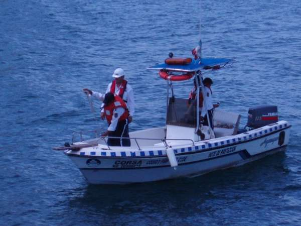

Strong Marina ofrece los siguientes cursos de capacitación:
Capacitación teórico-práctico en Control de Derrames de Hidrocarburo
- Primer Respuesta por derrames TIERRE 1 “Nivel Operativo”
- Primer Respuesta por derrames TIERRE 2 “Superiores”
- Primer Respuesta por derrames TIERRE 3 “Nivel Gerencia, Directivos, toma de decisiones”
- Primer Respuesta Ríos, Lagunas y Pantanos
- Curso utilización skimmer y estrategias de contención de derrames
- Curso Teórico-Práctico de seguridad de plataformas
- Curso despliegue barreras y despliegue de hidrocarburos
- Diferentes cursos enfocados en el área ambiental (legal)
Control de Derrames de Hidrocarburos de la Organización Marítima Internacional-IMO
El curso está diseñado para entrenar al participante en los conocimientos y habilidades básicas para responder a operaciones de:
- Desplazamiento de barreras de contención.
- Recuperación del producto.
- Trasvase del producto.
- Limpieza y aseguramiento del lugar.
Basado en estándares de la Organización Marítima Internacional — OMI.
Todos los objetivos del curso están alineados con las recomendaciones de la Organización Marítima Internacional y las Instituciones Aliadas Capter 4, I.T.O.P.F y OSHA 1910 que desarrollan esfuerzos para prevenir, mitigar y enfrentar la contaminación marina.
